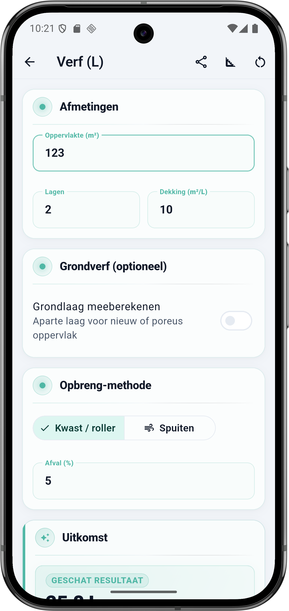
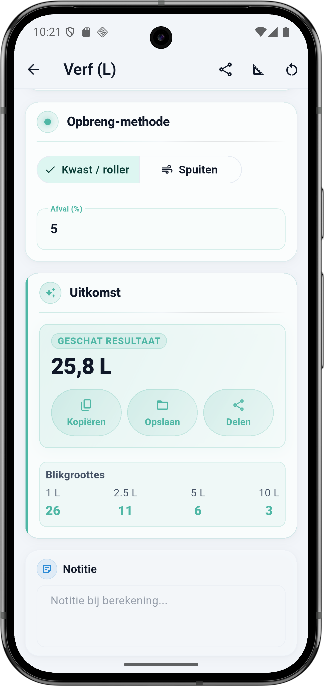

Wat vraagt de calculator
De Verf calculator heeft vier blokken: Afmetingen, Grondverf, Opbreng-methode en de Uitkomst. Elk veld hieronder komt één-op-één overeen met de app.
Afmetingen
- Oppervlakte (m²) — de netto te verven oppervlakte. Trek grote ramen, deuren of niet-te-verven stroken eraf. Een kleine deur negeer je meestal in de m²-opgave (het valt in de afvalmarge).
- Lagen — standaard 2 lagen. Donkere kleur over een lichte? Reken op 3. Lichte kleur over hetzelfde type? 1 kan.
- Dekking (m²/L) — staat op het verfblik. Vuistregel: latex muurverf 8–12, grondverf 10–14, lak 12–16, buitenmuurverf 6–10, betonverf 4–6.
Grondverf (optioneel)
- Grondlaag meeberekenen — zet dit aan als het oppervlak nieuw, poreus of sterk zuigend is (nieuwe stuclaag, kalkverf, oud behanglijm). De calculator rekent dan een extra laag mee met een eigen dekking.
Opbreng-methode
- Kwast / roller — standaard afval 5–10%. Minder overspray, meer in de prullenbak via de bak van de roller.
- Spuiten — hoger afval, meestal 15–25%. Overspray op plinten, plafond en vloer gaat verloren. Standaard binnen 20%.
- Afval (%) — losse waarde die je zelf kunt bijsturen. 5% is gangbaar voor nette kwast- of rollerwerk op een gladde muur.
💡 Dekking per verftype
De dekking op het blik is theoretisch — op een glad oppervlak. In de praktijk haal je 10–20% minder. Reken op de ondergrens van wat de fabrikant aangeeft, dan heb je nooit tekort.
De formule onder de motorkap
Verf is simpele wiskunde: oppervlakte keer het aantal lagen, gedeeld door dekking, plus afvalmarge. BuildExact vertaalt dat totaal direct naar het aantal blikken per blikgrootte.
Rekenvoorbeeld — binnenmuur 123 m²
Dit is de situatie uit de screenshot: één grote binnenruimte, twee lagen muurverf, kwastwerk met 5% afval. Geen grondverf nodig.
Invoer
| Veld | Waarde |
|---|---|
| Oppervlakte | 123 m² |
| Lagen | 2 |
| Dekking | 10 m²/L |
| Grondverf | Nee |
| Opbreng-methode | Kwast / roller |
| Afval | 5 % |
Berekening stap voor stap
- 123 m² × 2 lagen = 246 m² totaal te verven oppervlak
- 246 ÷ 10 m²/L = 24,6 L netto
- 24,6 × 1,05 (5% afval) = 25,83 L → afgerond 25,8 L
Resultaat
| Geschat totaal | 25,8 L |
|---|
BuildExact vertaalt dat totaal naar blikken per gangbare blikgrootte. Je zoekt de combinatie die het dichtst bij 25,8 L uitkomt zonder tekort — vaak kies je de grote blikken voor de hoofdlaag en één klein voor de bijwerk.
| Blikgrootte | Aantal | Totaal |
|---|---|---|
| 1 L | 26 | 26,0 L |
| 2,5 L | 11 | 27,5 L |
| 5 L | 6 | 30,0 L |
| 10 L | 3 | 30,0 L |
💡 Combineer blikgroottes
In de praktijk neem je zelden alleen 1 L. Voor 25,8 L is 2 × 10 L plus 2 × 2,5 L (= 25 L) plus één 1 L blik voor bijwerk vaak het goedkoopst. Blikken van 10 L zijn per liter het goedkoopst, 1 L blikken het duurst — maar handig als reserve.
Verschil kwast/roller vs spuiten
Spuiten gaat snel, maar je verliest verf aan overspray. Bij dezelfde 123 m² × 2 lagen × 10 m²/L kom je op:
| Methode | Afval | Nodig |
|---|---|---|
| Kwast / roller | 5 % | 25,8 L |
| Kwast / roller (ruim) | 10 % | 27,1 L |
| Spuiten (schoon) | 15 % | 28,3 L |
| Spuiten (standaard) | 20 % | 29,5 L |
| Spuiten (grof werk) | 25 % | 30,8 L |
Zo doe je dit in BuildExact
- Open de Verf calculator onder Materialen. Je ziet meteen 'Afmetingen' bovenin.
- Vul oppervlakte, lagen en dekking in. De dekking lees je af van het blik — 10 m²/L is een nette standaard voor latex muurverf.
- Grondverf alleen bij nieuw of poreus oppervlak. Zet 'Grondlaag meeberekenen' aan en vul de aparte dekking in.
- Kies kwast/roller of spuiten en pas 'Afval %' aan — meestal 5 voor rollerwerk, 20 voor spuiten.
- Bewaar of deel het resultaat vanuit de uitkomstkaart — of koppel aan een project zodat de blikken op je offerte komen.
Veelgestelde vragen
🎨 Reken je verf in BuildExact
Gratis in de app. Reken, bewaar als project, zet om in een offerte-PDF met je logo — allemaal zonder opnieuw te typen.
Gratis downloaden